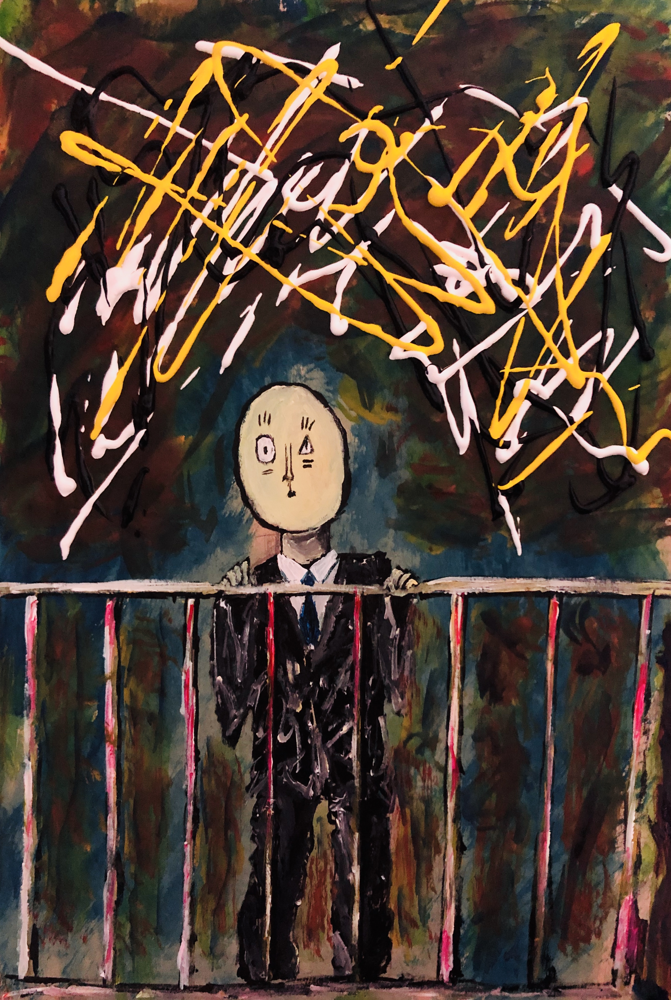

The road not taken
-Robert Frost-
Two roads diverged in a yellow wood,
And sorry I could not travel both
And be one traveler, long I stood
And looked down one as far as I could
To where it bent in the undergrowth;
Then took the other, as just as fair,
And having perhaps the better claim,
Because it was grassy and wanted wear;
Though as for that the passing there
Had worn them really about the same,
And both that morning equally lay
In leaves no step had trodden black.
Oh, I kept the first for another day!
Yet knowing how way leads on to way,
I doubted if I should ever come back.
I shall be telling this with a sigh
Somewhere ages and ages hence:
Two roads diverged in a wood, and I—
I took the one less traveled by,
And that has made all the difference

Happness
하릴없이 집에서 뒹굴거리고 있을 때면
아래에서 어린 친구들이 뭐가 그리도 신이 나는지 떠드는 것이 들려온다.
나는 그에 인상을 찌푸리며 헤드셋을 눌러쓴다.
조 히사이시의 Nostalgia를 들으며 베란다로 나가 창을 연다.
그리고 두리번 거리며 그 소음의 주인공을 찾는다.
신나게 게임 이야기를 하며 걸어가는 초등학생들,
자기 반에 좋아하는 애가 있다고 (비밀스레)말해주는 중학생들,
순수하고 아름답게 서로를 바라보며 이야기를 나누는 고등학생 커플,
나는 헤드셋을 벗고 그들의 삶에 조심스레 귀를 담근다.
그들의 삶의 순수함에 젖어 들 때쯤
소리는 멀어져가더니 들리지 않게 된다.
다시 공허한 집,
고요한 공기,
묵직한 한숨을 내쉬며 창문을 닫고
이를 모를 그들의 순수함에 감사를 표한다.
“덕분에 창문을 열었었다.”
어릴 적,
나는 행복에 대해 정의 내릴 필요가 없었었다.
아니, 정의라는 것 자체가 뭔지 몰랐었다.
하지만 커가며 행복에 대해 정의 내리려 애썼다.
지금 행복하지 않기 때문일까?
맞지 않는 집,
맞지 않는 옷,
맞지 않는 위치,
나에겐 맞지 않는 모든 것들이
한 때는 행복의 잣대이기도 했으나
지금의 나에겐 공포가 되었다.
그 뒤론 무언가 생길 때마다
잃을까 먼저 두려움을 느끼며
어디로 튈지 모르는 불안정한 정신으로,
내가 가진 얄팍한 삶의 지식으로
제멋대로 행복을 정의 내렸다.
그러고선 그들이 나의 삶에 더는 가까워지지 않도록
그들에게서 멀어지려 애썼다.
진짜 행복은 그를 정의 내리려 집착하지 않았을 때였다는 것을...
그를 알기까지 왜 이리도 긴 시간이 걸렸을까?
시끄럽다고 피하던 작은 소리에서도 알 수 있었던 것을..

The road not taken
-Robert Frost-
Two roads diverged in a yellow wood,
And sorry I could not travel both
And be one traveler, long I stood
And looked down one as far as I could
To where it bent in the undergrowth;
Then took the other, as just as fair,
And having perhaps the better claim,
Because it was grassy and wanted wear;
Though as for that the passing there
Had worn them really about the same,
And both that morning equally lay
In leaves no step had trodden black.
Oh, I kept the first for another day!
Yet knowing how way leads on to way,
I doubted if I should ever come back.
I shall be telling this with a sigh
Somewhere ages and ages hence:
Two roads diverged in a wood, and I—
I took the one less traveled by,
And that has made all the difference